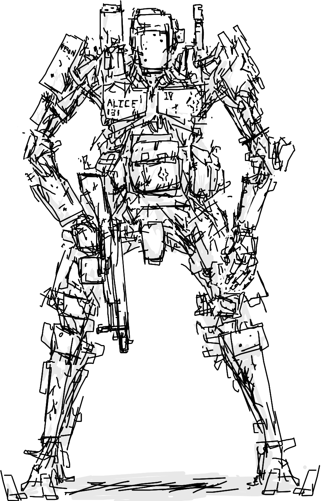

CDDA's World is fully filled with lots of deadly creatures ready to face you!
Here's a little list
Zombies!
These are your main, and often your worst enemies after the cataclysm, hungry and angry revived corpses. They
come in all shapes, sizes and colors! Some zombies can also transform into fungal variants when exposed to
spores, or other variants when set on fire. Many of the zombies are found in cities, but now and then, they
can be found in the wilderness.
Zombie:
A human body, swaying as it moves, an unstoppable rage is visible in its oily black eyes.
Acidic zombie
A sickly-looking dead one. Its skin looks especially thin, with a sticky, yellow fluid
flowing through the clearly visible veins.
Firefighter zombie
A decaying human body clad in tattered firefighting gear. It staggers aimlessly, reeking of
smoke and decay.
Grendier Zombie
Once a soldier, it is dressed head to toe in combat gear. Its hands constantly fumble at its
many pouches.
Crawling Zombie
This human corpse drags itself along slowly with its arms. Its legs are damaged beyond
repair.
Netherworld inhabitants
Cosmic horrors that leak to our world through tears in reality. Also, eldritch.
Mi-Go
This is an alien creature of uncertain origin. Its shapeless pink body bears numerous sets
of paired appendages of unknown function, and a pair of ribbed, membranous wings which seem to be
quite useless. Its odd, vaguely pyramid-shaped head bristles with numerous wavering antennae, and
simply gazing upon the unnatural beast fills you with primordial dread.
Blob
A black blob of viscous goo, oozing across the ground like a glob of living oil.
Robots
They were programmed to protect mankind... from mankind.
Beagle Mini-Tank UGV
The Northrup Beagle is a refrigerator-sized urban warfare UGV. Sporting an anti-tank missile
launcher, 40mm grenade launcher, and numerous anti-infantry weapons, it's designed for high-risk
urban fighting.
Broken Cyborg
A robot body with the head of a human. All kinds of electronic wires and devices are
implanted in its head. Patches of skin look diseased or rotting. This cyborg moves erratically and
has a confused and deranged look in its eyes.
Wraitheon Sentinel-lx
Its exterior plates are sable and gold, this luxurious variant of a Wraitheon drone was once kept as
a bodyguard by society's wealthiest. Still with its wrist sword extended, it resembles an ancient
knight, standing an eternal watch.
Wraitheon Imaginifier

The Imaginifer, one of the few examples of true humaniform robots, was manufactured by
Wraitheon for ESCA militaries. They are designed to complement infantry soldiers, being able to use
their gear and transports. While similar in shape, they are far removed from the ENIAC's Famulus.
The Wraitheon humaniforms are designed to take full advantage of a humanoid shape, not to look
human; programmed for game theory, not for sapience.